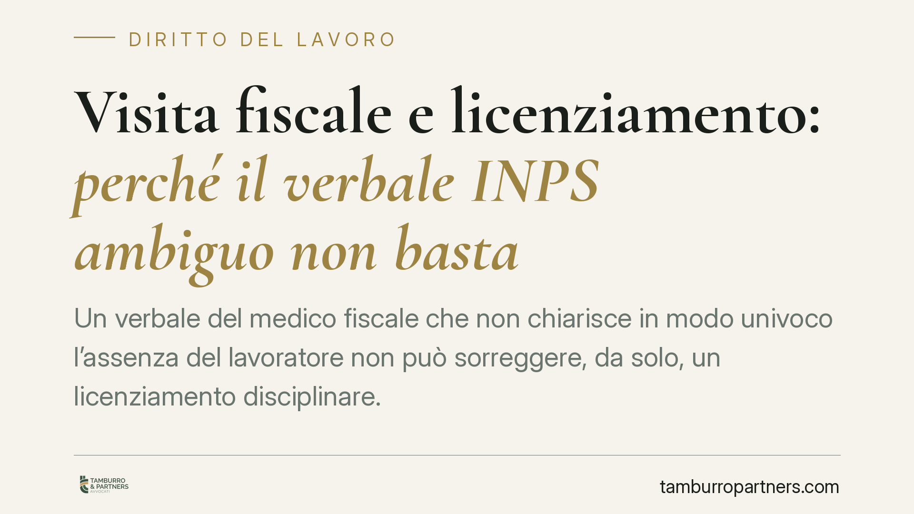

Visita fiscale e licenziamento: perché il verbale INPS ambiguo non basta
Un verbale del medico fiscale che non chiarisce in modo univoco l'assenza del lavoratore non può sorreggere, da solo, un licenziamento disciplinare. La giurisprudenza di legittimità ribadisce un principio essenziale: l'onere di provare l'effettiva irreperibilità grava sul datore di lavoro. Vediamo cosa significa in concreto e quali tutele si attivano, distinguendo i regimi applicabili.

Il caso
La questione ricorrente è questa: durante una visita di controllo (la cosiddetta "visita fiscale") il medico incaricato dall'INPS non trova il lavoratore e redige un verbale. Se però quel verbale è ambiguo — non chiarisce l'orario, le modalità di accesso, o se l'assenza fosse giustificata — può valere come prova piena della violazione disciplinare?
La risposta della giurisprudenza di legittimità è negativa. Un atto incerto non è sufficiente a fondare la sanzione più grave, il licenziamento. E il dubbio ricade su chi quella sanzione intende irrogare, cioè il datore di lavoro.
Una precisazione doverosa. Non ci risulta allo stato confermata, presso le fonti ufficiali, un'ordinanza della Cassazione con numero e anno attendibili su questo specifico punto per il 2026. Preferiamo quindi esporre il principio consolidato in materia, senza ancorarlo a un riferimento non verificabile. Su temi che toccano il posto di lavoro, la prudenza sulle fonti è parte del servizio.
Inquadramento normativo
Le fasce di reperibilità e il controllo dello stato di malattia trovano base nell'art. 5, comma 14, della L. n. 638/1983 e nell'art. 2, comma 2, del D.L. n. 463/1983 (conv. in L. n. 638/1983). Queste norme individuano le fasce orarie in cui il lavoratore in malattia deve rendersi reperibile e disciplinano le conseguenze dell'assenza ingiustificata ai controlli.
L'assenza alla visita non equivale automaticamente a illecito disciplinare. Esistono cause di giustificazione (necessità di sottoporsi a terapie o visite mediche indifferibili, altri impedimenti seri). In questi casi, l'eventuale omesso preavviso al datore è una mancanza di rilievo contenuto, che i contratti collettivi puniscono di regola con sanzioni conservative — richiamo, multa, sospensione — non con il licenziamento.
Sul piano della tutela in caso di recesso illegittimo, va distinto il regime applicabile:
- per i lavoratori assunti prima del 7 marzo 2015, opera l'art. 18 della L. n. 300/1970 (Statuto dei Lavoratori), con possibile reintegrazione attenuata quando il fatto contestato rientra tra le condotte punibili dal contratto collettivo con sola sanzione conservativa;
- per i lavoratori assunti dal 7 marzo 2015, si applica il D.Lgs. n. 23/2015 (contratto a tutele crescenti): la reintegrazione è circoscritta, in sostanza, all'ipotesi di insussistenza del fatto materiale contestato (art. 3, comma 2), con prevalenza negli altri casi della tutela indennitaria.
Individuare il regime corretto dipende dalla data di assunzione: è il primo dato da verificare in ogni valutazione del caso.
Implicazioni pratiche
Il punto di maggiore rilievo riguarda l'onere della prova. Non è il lavoratore a dover dimostrare di essere stato presente: è il datore a dover provare l'effettiva e ingiustificata irreperibilità. Un verbale ambiguo non assolve questo onere.
Ne discende che il datore non può trasformare un documento incerto nella base di un provvedimento espulsivo. Deve esistere una contestazione chiara, aderente ai fatti accertati, e proporzionata alla gravità reale della condotta.
Resta centrale il principio di proporzionalità: la sanzione deve essere graduata rispetto all'infrazione. Il contratto collettivo di categoria (ad esempio, nei settori industriali, i rispettivi CCNL) è lo strumento che individua la corrispondenza tra mancanze e sanzioni. Se la condotta rientra tra quelle punibili con misura conservativa, il licenziamento è sproporzionato e, come tale, illegittimo.
Cosa fare in concreto
- Verificate la data di assunzione. Determina quale regime di tutela si applica (art. 18 St. Lav. oppure D.Lgs. 23/2015) e, di conseguenza, le prospettive in caso di impugnazione.
- Richiedete copia integrale del verbale INPS e leggetelo criticamente: orario, modalità di accesso, eventuali annotazioni sull'impedimento. Un verbale lacunoso è un elemento a favore del lavoratore.
- Documentate ogni causa giustificativa dell'assenza — terapie, visite indifferibili, impedimenti — conservando prescrizioni, appuntamenti e comunicazioni, anche tardive, inviate al datore.
- Confrontate la contestazione con il codice disciplinare del CCNL applicato per verificare se la condotta ammetta solo una sanzione conservativa.
- Impugnate il licenziamento nei termini. L'impugnazione va proposta entro 60 giorni dalla comunicazione, seguita dal deposito del ricorso o dalla comunicazione della richiesta di conciliazione entro i successivi 180 giorni. Il mancato rispetto dei termini preclude la tutela.
Consigliamo di far valutare la contestazione prima di qualunque risposta scritta: una difesa impostata correttamente fin dalle giustificazioni incide spesso sull'esito.
---
Contributo informativo a cura di Tamburro & Partners - Avv. Giuseppe Tamburro. Non costituisce parere legale.
Ogni storia di lavoro ha i suoi tempi.
Se gestisci HR e vuoi un confronto su contenzioso, ispezioni o licenziamenti, scrivi allo studio. Ti rispondiamo entro un giorno lavorativo.